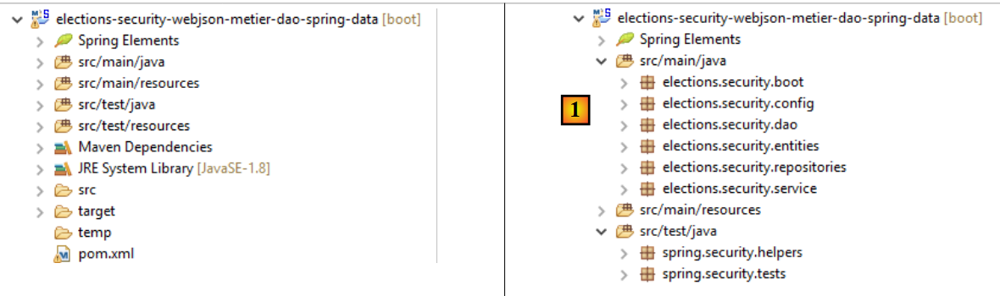
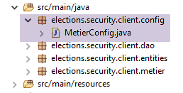
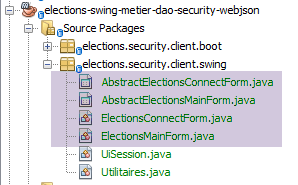
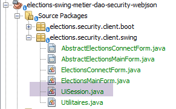
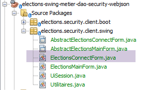

17. [TD]: seguridad del servidor web / jSON de las elecciones
Palabras clave: arquitectura multicapa, Spring, inyección de dependencias, servicio web / jSON seguro, cliente / servidor
Ahora aplicamos lo que hemos aprendido en el capítulo anterior al TD de las elecciones. La arquitectura será la siguiente:
 |
El proceso se desarrollará de la siguiente manera:
- escritura del servidor;
- programación del cliente sin la capa [ui], pero con una prueba JUnit de la capa [métier];
- escritura del cliente con la capa [ui];
17.1. Support
 |  |
Los proyectos de este capítulo se encuentran en la carpeta [support / chap-17]. El script SQL sirve para generar la base de datos necesaria para las pruebas.
17.2. La base de datos
La base de datos del servidor seguro debe contener ahora las tablas [USERS], [ROLES] y [USERS_ROLES]:
 |  |
El script SQL para la generación de la base de datos está disponible en la documentación de soporte.
17.3. El servidor seguro
Para configurar el servidor seguro de las elecciones, basta con copiar y pegar el proyecto de ejemplo [intro-spring-security-server-01]:
 |
Tarea a realizar: renombrar los paquetes tal y como se muestra en [1].
Una vez hecho esto, modificamos el archivo [pom.xml] de la siguiente manera:
<project xmlns="http://maven.apache.org/POM/4.0.0" xmlns:xsi="http://www.w3.org/2001/XMLSchema-instance"
xsi:schemaLocation="http://maven.apache.org/POM/4.0.0 http://maven.apache.org/xsd/maven-4.0.0.xsd">
<modelVersion>4.0.0</modelVersion>
<groupId>istia.st.elections</groupId>
<artifactId>elections-security-webjson-metier-dao-spring-data</artifactId>
<version>0.0.1-SNAPSHOT</version>
<name>elections-security-webjson-metier-dao-spring-data</name>
<description>elections spring security</description>
<properties>
<project.build.sourceEncoding>UTF-8</project.build.sourceEncoding>
<java.version>1.8</java.version>
</properties>
<parent>
<groupId>org.springframework.boot</groupId>
<artifactId>spring-boot-starter-parent</artifactId>
<version>1.2.7.RELEASE</version>
</parent>
<dependencies>
<dependency>
<groupId>istia.st.elections</groupId>
<artifactId>elections-webjson-metier-dao-spring-data</artifactId>
<version>0.0.1-SNAPSHOT</version>
</dependency>
<!-- Spring Security -->
...
</dependencies>
<!-- complementos -->
<build>
...
</build>
</project>
- en las líneas 23-27, sustituya la dependencia del proyecto [intro-server-webjson-01] por la del proyecto [elections-webjson-metier-dao-spring-data] analizado en el apartado 12;
- en las líneas 4-7, introduzca las características del nuevo proyecto;
Ahora nos queda modificar las clases de configuración del proyecto:
[DaoConfig]
package elections.security.config;
import org.springframework.context.annotation.Bean;
import org.springframework.context.annotation.ComponentScan;
import org.springframework.context.annotation.Import;
import org.springframework.data.jpa.repository.config.EnableJpaRepositories;
@EnableJpaRepositories(basePackages = { "elections.security.repositories" })
@ComponentScan(basePackages = { "elections.security.dao" })
@Import({ elections.dao.config.DaoConfig.class })
public class DaoConfig {
// constantes
final static private String[] ENTITIES_PACKAGES = { "elections.dao.entities", "elections.security.entities" };
@Bean
public String[] packagesToScan() {
return ENTITIES_PACKAGES;
}
}
Los cambios se encuentran en las siguientes líneas:
- líneas 8, 9 y 14: introducir los nombres correctos de los paquetes;
- línea 10: la clase importada es ahora [elections.dao.config.DaoConfig] del proyecto [elections-webjson-metier-dao-spring-data];
Nota: como ya se ha indicado, esta configuración solo funciona si la clase [elections.dao.config.DaoConfig] tiene la anotación [@Configuration]. Comprueba este punto.
[SecurityConfig]
package elections.security.config;
...
@EnableWebSecurity
@ComponentScan(basePackages = { "elections.security.service" })
@Import({ WebConfig.class, DaoConfig.class })
public class SecurityConfig extends WebSecurityConfigurerAdapter {
...
}
Los cambios se encuentran en las siguientes líneas:
- línea 6: cambia el nombre del paquete;
Eso es todo. Realice una primera prueba ejecutando la prueba JUnit []:
 |
Ejecuta la clase de arranque [Boot] y, a continuación, con la extensión de Chrome [Advanced Rest Client], realiza la siguiente prueba:
 |
En [1], la solicitud. En [3], la respuesta. En [2], el encabezado HTTP es el encabezado de autenticación del usuario [admin, admin]: Authorization:Basic YWRtaW46YWRtaW4=
Solicita ahora las listas en competición:
 |
17.4. El cliente del servidor seguro sin la capa [ui]
 |
Copia y pega el proyecto [elections-ui-metier-dao-webjson] en el proyecto [elections-metier-dao-security-webjson].
 |
Tarea a realizar: en [1], renombra los paquetes si es necesario y elimina los de la capa [ui] y de las clases de inicio [boot].
Ahora procederemos tal y como se hizo en el apartado 16.5.
17.4.1. Configuración de Maven
Solo cambia la parte de identificación del proyecto:
<project xmlns="http://maven.apache.org/POM/4.0.0" xmlns:xsi="http://www.w3.org/2001/XMLSchema-instance"
xsi:schemaLocation="http://maven.apache.org/POM/4.0.0 http://maven.apache.org/xsd/maven-4.0.0.xsd">
<modelVersion>4.0.0</modelVersion>
<groupId>istia.st.elections</groupId>
<artifactId>elections-metier-dao-security-webjson</artifactId>
<version>0.0.1-SNAPSHOT</version>
<description>Client jUnit du serveur web / jSON</description>
<name>elections-metier-dao-security-webjson</name>
...
17.4.2. Refactorización de la capa [métier]
 |
La interfaz [IElectionsMetier] evoluciona de la siguiente manera:
package elections.security.client.metier;
import elections.security.client.entities.ListeElectorale;
import elections.security.client.entities.User;
public interface IElectionsMetier {
// autenticación
public void authenticate(User user);
// obtener las listas de candidatos
public ListeElectorale[] getListesElectorales(User user);
// el número de escaños a cubrir
public int getNbSiegesAPourvoir(User user);
// el umbral electoral
public double getSeuilElectoral(User user);
// el registro de los resultados
public void recordResultats(User user, ListeElectorale[] listesElectorales);
// cálculo de escaños
public ListeElectorale[] calculerSieges(User user, ListeElectorale[] listesElectorales);
}
Todos los métodos tienen como primer parámetro al usuario que desea utilizar los recursos del servidor seguro.
La implementación [ElectionsMetier] evoluciona de la siguiente manera:
package elections.security.client.metier;
import java.io.IOException;
import org.springframework.beans.factory.annotation.Autowired;
import org.springframework.context.ApplicationContext;
import org.springframework.stereotype.Component;
import com.fasterxml.jackson.core.type.TypeReference;
import com.fasterxml.jackson.databind.ObjectMapper;
import elections.security.client.dao.IClientDao;
import elections.security.client.entities.ElectionsConfig;
import elections.security.client.entities.ElectionsException;
import elections.security.client.entities.ListeElectorale;
import elections.security.client.entities.User;
@Component
public class ElectionsMetier implements IElectionsMetier {
@Autowired
private IClientDao dao;
@Autowired
private ApplicationContext context;
// configuración de las elecciones
private ElectionsConfig electionsConfig;
private ElectionsConfig getElectionsConfig(User user) {
if(electionsConfig!=null){
return electionsConfig;
}
// mapas jSON
ObjectMapper mapperResponse = context.getBean(ObjectMapper.class);
try {
// consulta
Response<ElectionsConfig> response = mapperResponse.readValue(dao.getResponse(user, "/getElectionsConfig", null),
new TypeReference<Response<ElectionsConfig>>() {
});
// ¿Error?
if (response.getStatus() != 0) {
// se lanza 1 excepción
throw new ElectionsException(response.getStatus(), response.getMessages());
} else {
electionsConfig = response.getBody();
return electionsConfig;
}
} catch (ElectionsException e1) {
throw e1;
} catch (IOException | RuntimeException e2) {
throw new ElectionsException(100, e2);
}
}
@Override
public ListeElectorale[] getListesElectorales(User user) {
...
}
@Override
public int getNbSiegesAPourvoir(User user) {
return getElectionsConfig(user).getNbSiegesAPourvoir();
}
@Override
public double getSeuilElectoral(User user) {
return getElectionsConfig(user).getSeuilElectoral();
}
@Override
public void recordResultats(User user, ListeElectorale[] listesElectorales) {
...
}
@Override
public ListeElectorale[] calculerSieges(User user, ListeElectorale[] listesElectorales) {
...
}
@Override
public void authenticate(User user) {
dao.getResponse(user, "/authenticate", null);
}
}
Tarea: completa el código anterior.
17.4.3. Configuración de Spring
 |
La clase [MetierConfig] se modifica de la siguiente manera:
package elections.security.client.config;
...
@ComponentScan({ "elections.security.client.dao", "elections.security.client.metier" })
public class MetierConfig {
En la línea 5, hay que actualizar los paquetes que se van a explorar.
17.4.4. La prueba JUnit de la capa [métier]
 |
La clase de prueba [Test01] evoluciona de la siguiente manera:
package elections.security.client.metier.junit;
import org.junit.Assert;
import org.junit.BeforeClass;
import org.junit.Test;
import org.junit.runner.RunWith;
import org.springframework.beans.factory.annotation.Autowired;
import org.springframework.boot.test.SpringApplicationConfiguration;
import org.springframework.test.context.junit4.SpringJUnit4ClassRunner;
import com.fasterxml.jackson.core.JsonProcessingException;
import com.fasterxml.jackson.databind.ObjectMapper;
import elections.security.client.config.MetierConfig;
import elections.security.client.entities.ElectionsException;
import elections.security.client.entities.ListeElectorale;
import elections.security.client.entities.User;
import elections.security.client.metier.IElectionsMetier;
@SpringApplicationConfiguration(classes = MetierConfig.class)
@RunWith(SpringJUnit4ClassRunner.class)
public class Test01 {
// capa [electionsMetier]
@Autowired
private IElectionsMetier electionsMetier;
// mapeador jSON
private final ObjectMapper mapper = new ObjectMapper();
// usuarios
static private User admin;
static private User user;
static private User unknown;
@BeforeClass
public static void initTest() {
admin = new User("admin", "admin");
user = new User("user", "user");
unknown = new User("x", "y");
}
@Test()
public void checkUserUser() {
ElectionsException se = null;
try {
electionsMetier.authenticate(user);
} catch (ElectionsException e) {
se = e;
}
Assert.assertNotNull(se);
Assert.assertEquals("403 Forbidden", se.getErreurs().get(0));
}
@Test()
public void checkUserUnknown() {
ElectionsException se = null;
try {
electionsMetier.authenticate(unknown);
} catch (ElectionsException e) {
se = e;
}
Assert.assertNotNull(se);
Assert.assertEquals("401 Unauthorized", se.getErreurs().get(0));
}
@Test()
public void checkUserAdmin() {
ElectionsException se = null;
try {
electionsMetier.authenticate(admin);
} catch (ElectionsException e) {
se = e;
}
Assert.assertNull(se);
}
/**
* vérification 1 : méthode de calcul des sièges on fixe en dur les listes
*/
@Test
public void calculSieges1() {
// se crea la tabla de las 7 listas de candidatos
ListeElectorale[] listes = new ListeElectorale[7];
listes[0] = new ListeElectorale("A", 32000, 0, false);
listes[1] = new ListeElectorale("B", 25000, 0, false);
listes[2] = new ListeElectorale("C", 16000, 0, false);
listes[3] = new ListeElectorale("D", 12000, 0, false);
listes[4] = new ListeElectorale("E", 8000, 0, false);
listes[5] = new ListeElectorale("F", 4500, 0, false);
listes[6] = new ListeElectorale("G", 2500, 0, false);
// se calculan los escaños de cada una de las listas
listes = electionsMetier.calculerSieges(admin,listes);
// se comprueban los resultados
Assert.assertEquals(2, listes[0].getSieges());
Assert.assertFalse(listes[0].isElimine());
Assert.assertEquals(2, listes[1].getSieges());
Assert.assertFalse(listes[1].isElimine());
Assert.assertEquals(1, listes[2].getSieges());
Assert.assertFalse(listes[2].isElimine());
Assert.assertEquals(1, listes[3].getSieges());
Assert.assertFalse(listes[3].isElimine());
Assert.assertEquals(0, listes[4].getSieges());
Assert.assertFalse(listes[4].isElimine());
Assert.assertEquals(0, listes[5].getSieges());
Assert.assertTrue(listes[5].isElimine());
Assert.assertEquals(0, listes[6].getSieges());
Assert.assertTrue(listes[6].isElimine());
}
/**
* vérification 2 : méthode de calcul des sièges on demande les listes à la couche [metier] puis on fixe en dur les
* voix
*/
@Test
public void calculSieges2() {
// se crea la tabla de las 7 listas de candidatos
ListeElectorale[] listes = electionsMetier.getListesElectorales(admin);
// se fijan los votos
listes[0].setVoix(32000);
listes[1].setVoix(25000);
listes[2].setVoix(16000);
listes[3].setVoix(12000);
listes[4].setVoix(8000);
listes[5].setVoix(4500);
listes[6].setVoix(2500);
// se calculan los escaños obtenidos por cada una de las listas
listes = electionsMetier.calculerSieges(admin,listes);
// se comprueban los resultados
Assert.assertEquals(2, listes[0].getSieges());
Assert.assertFalse(listes[0].isElimine());
Assert.assertEquals(2, listes[1].getSieges());
Assert.assertFalse(listes[1].isElimine());
Assert.assertEquals(1, listes[2].getSieges());
Assert.assertFalse(listes[2].isElimine());
Assert.assertEquals(1, listes[3].getSieges());
Assert.assertFalse(listes[3].isElimine());
Assert.assertEquals(0, listes[4].getSieges());
Assert.assertFalse(listes[4].isElimine());
Assert.assertEquals(0, listes[5].getSieges());
Assert.assertTrue(listes[5].isElimine());
Assert.assertEquals(0, listes[6].getSieges());
Assert.assertTrue(listes[6].isElimine());
}
/**
* vérification 3 méthode de calcul des sièges on provoque une exception
*/
@Test(expected = ElectionsException.class)
public void calculSieges3() {
// se crea una tabla con 24 listas de candidatos, cada una con 1 voto
ListeElectorale[] listes = new ListeElectorale[25];
// las 25 listas tendrán el mismo número de votos (4 %)
for (int i = 0; i < listes.length; i++) {
listes[i] = new ListeElectorale("Liste" + (i + 1), 1, 0, false);
}
// cálculo de escaños: normalmente debería ser ElectionsException
// con un umbral electoral del 5 %
electionsMetier.calculerSieges(admin,listes);
}
/**
* enregistrement des résultats de l'élection
*
* @throws JsonProcessingException
*/
@Test
public void ecritureResultatsElections() throws JsonProcessingException {
// se crea la tabla con las 7 listas candidatas
ListeElectorale[] listes = electionsMetier.getListesElectorales(admin);
// se fijan los votos de forma definitiva
listes[0].setVoix(32000);
listes[1].setVoix(25000);
listes[2].setVoix(16000);
listes[3].setVoix(12000);
listes[4].setVoix(8000);
listes[5].setVoix(4500);
listes[6].setVoix(2500);
// se calculan los escaños obtenidos por cada una de las listas
listes = electionsMetier.calculerSieges(admin,listes);
// se muestran los resultados
for (int i = 0; i < listes.length; i++) {
System.out.println(mapper.writeValueAsString(listes[i]));
}
// se guardan los resultados en la base de datos
electionsMetier.recordResultats(admin,listes);
// se comprueban los resultados
listes = electionsMetier.getListesElectorales(admin);
// se muestran los resultados
for (int i = 0; i < listes.length; i++) {
System.out.println(mapper.writeValueAsString(listes[i]));
}
Assert.assertEquals(2, listes[0].getSieges());
Assert.assertFalse(listes[0].isElimine());
Assert.assertEquals(2, listes[1].getSieges());
Assert.assertFalse(listes[1].isElimine());
Assert.assertEquals(1, listes[2].getSieges());
Assert.assertFalse(listes[2].isElimine());
Assert.assertEquals(1, listes[3].getSieges());
Assert.assertFalse(listes[3].isElimine());
Assert.assertEquals(0, listes[4].getSieges());
Assert.assertFalse(listes[4].isElimine());
Assert.assertEquals(0, listes[5].getSieges());
Assert.assertTrue(listes[5].isElimine());
Assert.assertEquals(0, listes[6].getSieges());
Assert.assertTrue(listes[6].isElimine());
}
}
Tarea a realizar: comprende esta prueba y comprueba que se supere.
17.5. El cliente del servidor seguro con una capa [console]
 |
Con NetBeans, abrimos los proyectos Maven [elections-metier-dao-security-webjson] y [elections-ui-metier-dao-webjson] y, a continuación, creamos un nuevo proyecto [elections-console-metier-dao-security-webjson] copiando y pegando el proyecto [elections-ui-metier-dao-webjson]:
 |
La mayoría de las clases del nuevo proyecto [3] proceden del proyecto [elections-ui-metier-dao-webjson] y [2], que era el cliente del servidor web / jSON no seguro:
 |
Sigue estos pasos para crear el nuevo proyecto Maven:
- copia y pega el proyecto [elections-ui-metier-dao-webjson] en el proyecto [elections-ui-metier-dao-security-webjson];
- en el nuevo proyecto:
- elimina los paquetes [elections.client.dao, elections.client.metier, elections.client.entities];
- en el paquete [elections.client.ui], conserve únicamente la clase de consola [ElectionsConsole] y su interfaz [IElectionsUI];
- cambie el nombre de los paquetes tal y como se indica en [3];
- solucione los problemas de importación en las distintas clases mediante [clic droit / Fix Imports];
En este punto, el nuevo proyecto presenta numerosos errores.
17.5.1. Configuración de Maven
El archivo [pom.xml] del nuevo proyecto es el siguiente:
<project xmlns="http://maven.apache.org/POM/4.0.0" xmlns:xsi="http://www.w3.org/2001/XMLSchema-instance"
xsi:schemaLocation="http://maven.apache.org/POM/4.0.0 http://maven.apache.org/xsd/maven-4.0.0.xsd">
<modelVersion>4.0.0</modelVersion>
<groupId>istia.st.elections</groupId>
<artifactId>elections-console-metier-dao-security-webjson</artifactId>
<version>0.0.1-SNAPSHOT</version>
<name>elections-console-metier-dao-security-webjson</name>
<description>couche console du client web / jSON</description>
<properties>
<project.build.sourceEncoding>UTF-8</project.build.sourceEncoding>
<java.version>1.8</java.version>
</properties>
<parent>
<groupId>org.springframework.boot</groupId>
<artifactId>spring-boot-starter-parent</artifactId>
<version>1.2.7.RELEASE</version>
</parent>
<dependencies>
<dependency>
<groupId>istia.st.elections</groupId>
<artifactId>elections-metier-dao-security-webjson</artifactId>
<version>0.0.1-SNAPSHOT</version>
</dependency>
</dependencies>
<build>
<plugins>
<plugin>
<groupId>org.apache.maven.plugins</groupId>
<artifactId>maven-surefire-plugin</artifactId>
<version>2.18.1</version>
</plugin>
</plugins>
</build>
</project>
- líneas 4-8: la identidad Maven del nuevo proyecto;
- líneas 22-26: la dependencia del proyecto [elections-metier-dao-security-webjson] que acabamos de crear en el apartado 17.4, y que proporciona las capas [DAO] y [métier];
17.5.2. Configuración de Spring
 |
La clase [UiConfig] es la siguiente:
package elections.security.client.config;
import elections.security.client.entities.User;
import org.springframework.context.annotation.Bean;
import org.springframework.context.annotation.ComponentScan;
import org.springframework.context.annotation.Import;
@Import(MetierConfig.class)
@ComponentScan(basePackages = {"elections.security.client.console","elections.security.client.swing"})
public class UiConfig {
// administrador
private final User ADMIN = new User("admin", "admin");
@Bean
private User admin() {
return ADMIN;
}
}
- línea 8: se importa la clase [elections.security.client.config.MetierConfig] del proyecto [elections-metier-dao-security-webjson] analizado en el apartado 17.4;
- línea 9: se declaran los paquetes donde se encuentran los beans de Spring;
- líneas 12-18: el bean [admin] es el usuario [admin, admin] que utilizará la aplicación de consola. Recordemos que es el único usuario autorizado para consultar el servidor web seguro /jSON;
17.5.3. La aplicación de arranque de la consola
 |
La clase [ElectionsConsole] evoluciona de la siguiente manera:
package elections.security.client.console;
import java.util.Arrays;
import java.util.Comparator;
import java.util.Scanner;
import org.springframework.beans.factory.annotation.Autowired;
import org.springframework.stereotype.Component;
import elections.security.client.entities.ElectionsException;
import elections.security.client.entities.ListeElectorale;
import elections.security.client.entities.User;
import elections.security.client.metier.IElectionsMetier;
@Component
public class ElectionsConsole implements IElectionsUI {
@Autowired
private IElectionsMetier electionsMetier;
@Autowired
private User admin;
@Override
public void run() {
// las listas en competición
ListeElectorale[] listes;
// introducción de datos
try (Scanner clavier = new Scanner(System.in)) {
// se solicitan las listas en liza a la capa [metier]
listes = electionsMetier.getListesElectorales(admin);
// se realiza el recuento de votos
System.out.println("Il y a " + listes.length
+ " listes en compétition. Veuillez indiquer le nombre de voix de chacune d'elles :");
for (int i = 0; i < listes.length; i++) {
boolean saisieOK = false;
while (!saisieOK) {
System.out.print("Nombre de voix de la liste [" + listes[i].getNom() + "] : ");
try {
listes[i].setVoix(Integer.parseInt(clavier.nextLine()));
saisieOK = true;
} catch (ElectionsException | NumberFormatException ex) {
System.out.println("Nombre de voix incorrect. Veuillez recommencer");
}
}
}
}
// se calculan los escaños
listes=electionsMetier.calculerSieges(admin,listes);
// se registran los resultados
electionsMetier.recordResultats(admin,listes);
// se ordenan las listas por orden descendente de votos
Arrays.sort(listes, new CompareListesElectorales());
// se muestran
System.out.println("\nRésultats de l'élection\n");
for (int i = 0; i < listes.length; i++) {
System.out.println(listes[i]);
}
}
// clase de comparación de listas electorales
class CompareListesElectorales implements Comparator<ListeElectorale> {
// comparación de dos listas de candidatos según el número de votos
@Override
public int compare(ListeElectorale listeElectorale1, ListeElectorale listeElectorale2) {
// se comparan los votos de estas dos listas
int nbVoix1 = listeElectorale1.getVoix();
int nbVoix2 = listeElectorale2.getVoix();
if (nbVoix1 < nbVoix2) {
return +1;
} else {
if (nbVoix1 > nbVoix2)
return -1;
else
return 0;
}
}
}
}
La clase ElectionsConsole apenas sufre cambios. Solo hay que tener en cuenta que ahora los métodos de la capa [métier] requieren como primer parámetro un usuario (líneas 31, 49, 51). Este se proporciona mediante la inyección de las líneas 21-22. El usuario inyectado es aquel autorizado para consultar el servidor web /jSON.
Tarea: prueba la aplicación de consola (no olvides iniciar primero el servidor seguro).
17.6. El cliente del servidor seguro con una capa [swing]
 |
Creamos un nuevo proyecto de NetBeans [elections-swing-metier-dao-security-webjson] copiando y pegando el proyecto [elections-ui-metier-dao-webjson]:
 |
En el nuevo proyecto [2]:
- elimina los paquetes [elections.client.dao, elections.client.metier, elections.client.entities];
- en el paquete [elections.client.ui], elimine las clases [ElectionsConsole, IElectionsUI];
- cambie el nombre de los paquetes tal y como se indica en [2];
- en el paquete [elections.security.client.swing], cambie el nombre de la clase [AbstractElectionsSwing], que implementa la interfaz gráfica, a [AbstractElectionsMainForm], y el de la clase [ElectionsSwing], que implementa los controladores de eventos de lainterfaz gráfica en [ElectionsMainForm];
- corrija los problemas de importación en las distintas clases mediante [clic droit / Fix Imports];
En este punto, hay numerosos errores.
17.6.1. Configuración de Maven
El archivo [pom.xml] evoluciona de la siguiente manera:
<project xmlns="http://maven.apache.org/POM/4.0.0" xmlns:xsi="http://www.w3.org/2001/XMLSchema-instance"
xsi:schemaLocation="http://maven.apache.org/POM/4.0.0 http://maven.apache.org/xsd/maven-4.0.0.xsd">
<modelVersion>4.0.0</modelVersion>
<groupId>istia.st.elections</groupId>
<artifactId>elections-swing-metier-dao-security-webjson</artifactId>
<version>0.0.1-SNAPSHOT</version>
<name>elections-swing-metier-dao-security-webjson</name>
<description>couche swing du client web / jSON</description>
<properties>
<project.build.sourceEncoding>UTF-8</project.build.sourceEncoding>
<java.version>1.8</java.version>
</properties>
<parent>
<groupId>org.springframework.boot</groupId>
<artifactId>spring-boot-starter-parent</artifactId>
<version>1.2.7.RELEASE</version>
</parent>
<dependencies>
<dependency>
<groupId>istia.st.elections</groupId>
<artifactId>elections-console-metier-dao-security-webjson</artifactId>
<version>0.0.1-SNAPSHOT</version>
</dependency>
</dependencies>
<build>
<plugins>
<plugin>
<groupId>org.apache.maven.plugins</groupId>
<artifactId>maven-surefire-plugin</artifactId>
<version>2.18.1</version>
</plugin>
</plugins>
</build>
</project>
- líneas 4-8: la identidad Maven del nuevo proyecto;
- líneas 22-26: una dependencia del proyecto «console» que acabamos de analizar en el apartado 17.5;
17.6.2. Configuración de Spring
Este proyecto utiliza la configuración de Spring del proyecto «console» que importa (véase el apartado 17.5.2).
17.6.3. Las vistas de la aplicación Swing
 |
Este proyecto utilizará dos vistas:
 |
- La vista de inicio de sesión [1] es nueva. Sirve para autenticar al usuario que desea utilizar la aplicación. Utiliza las clases:
- [AbstractElectionsConnectForm], que implementa la vista;
- [ElectionsConnectForm], que gestiona los eventos de la vista;
- la vista [2] ya es conocida. Es la que se ha utilizado hasta ahora. Utiliza las clases:
- [AbstractElectionsMainForm], que implementa la vista;
- [ElectionsMainForm], que gestiona los eventos de la vista;
17.6.4. La sesión
 |
Cuando una aplicación Swing tiene varias vistas, es necesario encontrar una forma de que una vista pueda pasar información a otra vista. Utilizamos un concepto propio del desarrollo web: la sesión, que permite que las vistas asociadas a un usuario concreto compartan información. Este concepto se implementará aquí mediante un singleton de Spring que se inyectará en las dos clases que gestionan los eventos de ambas vistas:
package elections.security.client.swing;
import elections.security.client.entities.User;
import org.springframework.stereotype.Component;
@Component
public class UiSession {
// el usuario que ha iniciado sesión
private User user;
// getter y setter
...
}
- línea 6: la clase [UiSession] es un componente de Spring;
- línea 10: solo tiene una función: almacenar el usuario que inicia sesión con la vista [1]. La vista [2], que necesita conocerlo, lo buscará allí;
17.6.5. La clase de arranque
 |
La clase de inicio de la aplicación gráfica es la siguiente:
package elections.security.client.boot;
import elections.security.client.console.IElectionsUI;
public class BootElectionsSwing extends AbstractBootElections {
public static void main(String[] arguments) {
new BootElectionsSwing().run();
}
@Override
protected IElectionsUI getUI() {
return ctx.getBean("electionsConnectForm", IElectionsUI.class);
}
}
- línea 5: la clase [BootElectionsSwing] hereda de la clase [AbstractBootElections] definida en el proyecto de consola que se encuentra entre las dependencias del proyecto;
- líneas 10-13: la clase [BootElectionsSwing] mostrará la vista de inicio de sesión [ElectionsConnectForm];
- líneas 6-8: se ejecutará el método [run] de esta clase;
17.6.6. La clase [ElectionsMainForm]
La clase [ElectionsMainForm] es la que antes se denominaba [ElectionsSwing]. Gestiona los eventos de la vista [AbstractElectionsMainForm]. Su código evoluciona de la siguiente manera:
package elections.security.client.swing;
import elections.security.client.console.IElectionsUI;
import java.awt.Dimension;
import java.awt.Toolkit;
import java.util.ArrayList;
import java.util.List;
import javax.swing.DefaultListModel;
import javax.swing.JLabel;
import javax.swing.JMenuItem;
import javax.swing.JOptionPane;
import org.springframework.beans.factory.annotation.Autowired;
import org.springframework.stereotype.Component;
import elections.security.client.entities.ElectionsException;
import elections.security.client.entities.ListeElectorale;
import elections.security.client.entities.User;
import elections.security.client.metier.IElectionsMetier;
@Component
public class ElectionsMainForm extends AbstractElectionsMainForm implements IElectionsUI {
private static final long serialVersionUID = 1L;
// Referencia sobre la capa [métier]
@Autowired
private IElectionsMetier metier;
// sesión UI
@Autowired
private UiSession uiSession;
// usuario conectado
private User user;
// plantillas de las listas JList
private DefaultListModel<String> modèleNomsVoix = null;
private DefaultListModel<String> modèleRésultats = null;
// las listas en competición
private ListeElectorale[] listes;
// listas introducidas por el usuario
private final List<ListeElectorale> listesSaisies = new ArrayList<>();
private ListeElectorale[] tListesSaisies;
// inicializaciones
@Override
protected void init() {
// generación de componentes por la clase padre
super.init();
// inicializaciones locales
modèleNomsVoix = new DefaultListModel<>();
jListNomsVoix.setModel(modèleNomsVoix);
modèleRésultats = new DefaultListModel<>();
jListResultats.setModel(modèleRésultats);
String info;
boolean erreur = false;
try {
// se solicitan las listas a la capa [métier]
listes = metier.getListesElectorales(user);
// se asocian los nombres de las listas al cuadro combinado jComboBoxNomsListes
for (int i = 0; i < listes.length; i++) {
jComboBoxNomsListes.addItem(String.format("%s - %s", listes[i].getId(), listes[i].getNom()));
}
// así como los parámetros de la elección
int nbSiegesAPourvoir = metier.getNbSiegesAPourvoir(user);
double seuilElectoral = metier.getSeuilElectoral(user);
// se inicializan las etiquetas relacionadas con estos dos datos
jLabelSAP.setText(jLabelSAP.getText() + nbSiegesAPourvoir);
jLabelSE.setText(jLabelSE.getText() + seuilElectoral);
// mensaje de éxito
info = "Source de données lue avec succès";
} catch (ElectionsException ex1) {
// se registra el error
info = getInfoForException("Les erreurs suivantes se sont produites :", ex1);
erreur = true;
} catch (RuntimeException ex2) {
// se registra el error
info = getInfoForException("Les erreurs suivantes se sont produites :", ex2);
erreur = true;
}
// ¿Error?
if (erreur) {
// se muestra la información
jTextPaneMessages.setText(info);
jTextPaneMessages.setCaretPosition(0);
return;
} else {
jTextPaneMessages.setText("");
}
// estado del formulario
Utilitaires.setEnabled(new JLabel[]{jLabelAjouter, jLabelCalculer, jLabelEnregistrer, jLabelSupprimer}, false);
Utilitaires.setEnabled(
new JMenuItem[]{jMenuItemAjouter, jMenuItemCalculer, jMenuItemEnregistrer, jMenuItemSupprimer}, false);
// centrar la ventana
Dimension screenSize = Toolkit.getDefaultToolkit().getScreenSize();
Dimension frameSize = getSize();
if (frameSize.height > screenSize.height) {
frameSize.height = screenSize.height;
}
if (frameSize.width > screenSize.width) {
frameSize.width = screenSize.width;
}
setLocation((screenSize.width - frameSize.width) / 2, (screenSize.height - frameSize.height) / 2);
}
...
@Override
public void run() {
// memorización de usuario
user = uiSession.getUser();
// inicialización de la ventana
init();
setVisible(true);
}
}
- líneas 32-33: inyección de la sesión de la aplicación;
- líneas 112-119: la vista se activará, como anteriormente, mediante su método [run];
- línea 115: se recupera el usuario de la sesión. Este habrá sido introducido allí por el código de la vista de inicio de sesión [ElectionsConnectForm]. A continuación, se modifica el código para que el primer parámetro de las llamadas a la capa [métier] sea este usuario (líneas 63, 69-70, por ejemplo);
17.6.7. La vista [AbstractElectionsConnectForm]
 |
Crea con NetBeans el siguiente formulario:
 |
La clase no implementará por sí misma el método que gestiona el clic en la opción de menú [Connexion]. Recurrirá a un método [doConnecter] declarado abstracto y la clase de la vista se declarará a su vez abstracta. Se eliminará el método estático [main] que se generó automáticamente.
17.6.8. Gestión de eventos de la vista de inicio de sesión
 |
La clase [ElectionsConnectForm] implementa la gestión de eventos de la vista de conexión de la siguiente manera:
package elections.security.client.swing;
import elections.security.client.console.IElectionsUI;
import elections.security.client.entities.ElectionsException;
import elections.security.client.entities.User;
import elections.security.client.metier.IElectionsMetier;
import java.awt.Dimension;
import java.awt.Toolkit;
import javax.swing.SwingUtilities;
import org.springframework.beans.factory.annotation.Autowired;
import org.springframework.stereotype.Component;
@Component
public class ElectionsConnectForm extends AbstractElectionsConnectForm implements IElectionsUI {
private static final long serialVersionUID = 1L;
// referencia en la capa [métier]
@Autowired
private IElectionsMetier metier;
// usuario conectado
private User user;
// formulario principal
@Autowired
private ElectionsMainForm electionsMainForm;
// sesión UI
@Autowired
private UiSession uiSession;
@Override
protected void doConnect() {
String info = null;
try {
if (isPageValid()) {
// autenticación del usuario
metier.authenticate(user);
// se guarda el usuario en la sesión
uiSession.setUser(user);
// se oculta la vista de inicio de sesión
setVisible(false);
// se muestra la vista principal
electionsMainForm.run();
}
} catch (ElectionsException ex1) {
// se registra el error
info = getInfoForException("Les erreurs suivantes se sont produites :", ex1);
} catch (RuntimeException ex2) {
// se registra el error
info = getInfoForException("Les erreurs suivantes se sont produites :", ex2);
}
// ¿Error?
if (info != null) {
// se muestra la información
jTextPaneErreurs.setText(info);
jTextPaneErreurs.setCaretPosition(0);
}
}
// inicializaciones
@Override
protected void init() {
// generación de los componentes por la clase padre
super.init();
// inicializaciones locales
...
// centrar la ventana
...
}
@Override
public void run() {
// se muestra la interfaz gráfica
SwingUtilities.invokeLater(new Runnable() {
public void run() {
init();
setVisible(true);
}
});
}
private boolean isPageValid() {
...
}
private String getInfoForException(String message, ElectionsException ex) {
...
}
private String getInfoForException(String message, RuntimeException ex) {
...
}
}
- líneas 73-82: el método [run], que será invocado por la clase de arranque [BootElectionsSwing];
- líneas 26-27: inyección de una referencia a la vista n.º 2, que deberá mostrarse si se reconoce al usuario;
- líneas 30-31: inserción de la sesión de la aplicación;
- línea 84: el método [isPageValid] realiza dos acciones:
- comprueba que el identificador no esté vacío (la contraseña sí puede estarlo);
- instancia el campo «User» de la línea 23 con los datos introducidos;
 |  |
 |  |
Tarea: completa el código de la clase.
Tarea: prueba la aplicación.